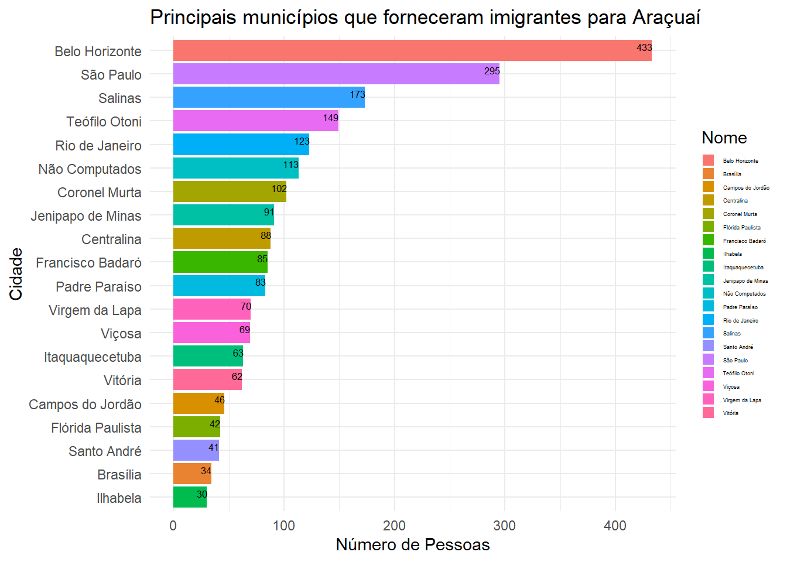
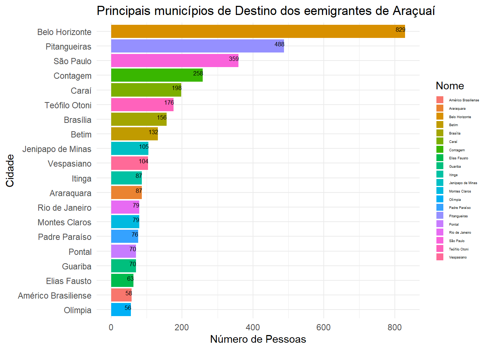
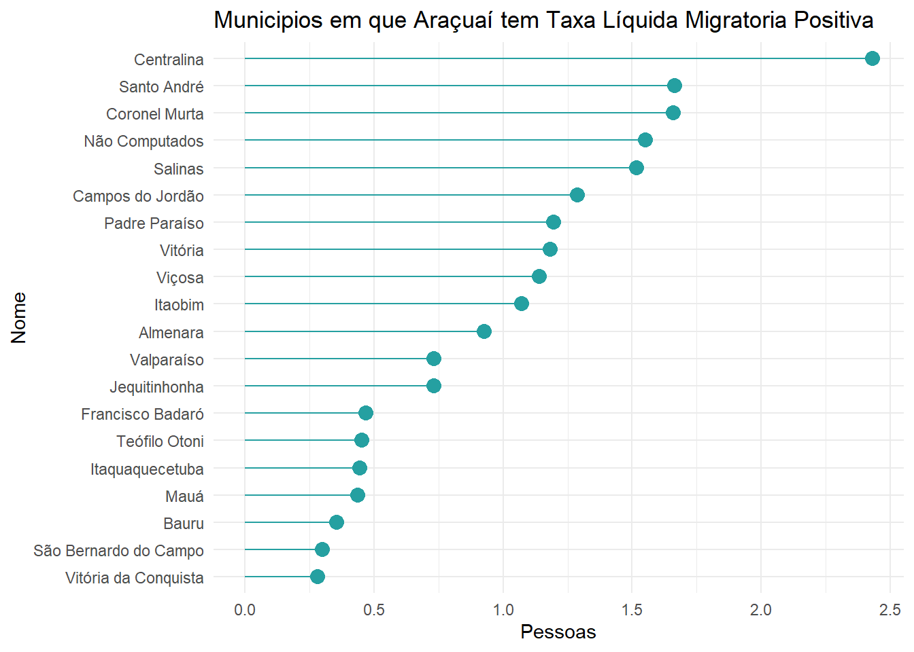
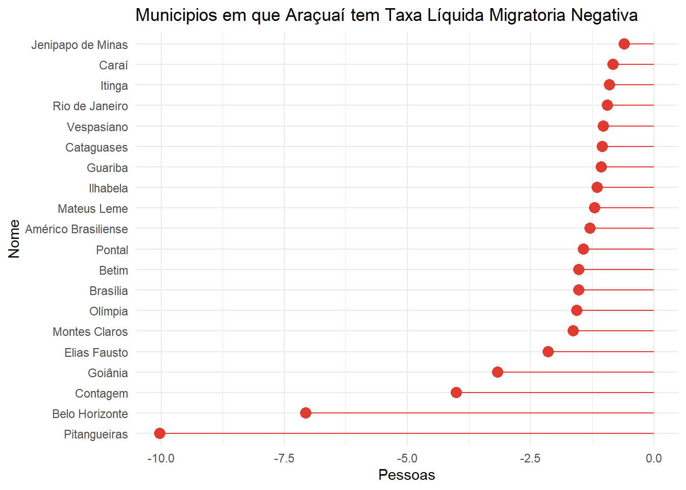
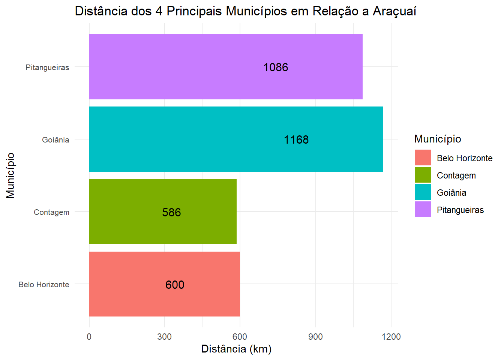

6 Caso Aracuaí
[Em edição]
6.1 Quais os fluxos migratórios observados especificamente em Araçuaí?
Esta seção padrões migratórios em Araçuaí, uma cidade chave na compreensão dos fluxos demográficos em Minas Gerais, Brasil. Através de uma análise detalhada da estrutura demográfica, imigração, emigração e saldos migratórios líquidos, o estudo busca desvendar as dinâmicas populacionais subjacentes que moldam a região. Utilizando métodos estatísticos avançados e dados demográficos recentes, a pesquisa revela insights significativos sobre as tendências migratórias, suas causas e consequências. Este relatório não apenas fornece uma visão abrangente sobre o perfil demográfico de Araçuaí, mas também contribui para a compreensão mais ampla dos fenômenos migratórios no Brasil.
6.1.1 Estrutura demográfica
A estrutura demográfica de uma população e a sua taxa de crescimento revelam a sua tendência demográfica. A pirâmide populacional de Araçuaí apresenta a base reduzida, com predominância da fase jovem adulta. Isto indica uma baixa taxa de natalidade e o boom da força de trabalho nos próximos anos em função da concentração nas faixas etárias entre 10 a 19 anos. O pequeno alargamento da ‘cintura’ da pirâmide reitera a tendência de redução das taxas de fecundidade de forma mais breve, na geração seguinte.
6.1.2 Imigração
Em 2010, a população de Araçuaí era de 36.013. Para 18,8% dessa população (6.783 pessoas), residir no município é resultado de alguma experiência migratória, inclusive para 1.736 pessoas naturais do próprio município que no passado residiram em algum outro município e retornaram ao município de origem. Entre os não naturais do município (5.047 pessoas), 67,9% (3.428 pessoas) são naturais da própria Unidade da Federação (MG) e vieram de outros municípios do Estado; 24,9% (1.258 pessoas) são naturais de outras UFs podendo ter vindo da própria UF ou de outros Estados; 6,7% (340 pessoas) são naturais da UF mas vieram de outros Estados; e 0,4% (21 pessoas) são estrangeiros (naturalizados ou não).
Do total dos imigrantes do município (naturais ou não), 8,7% (3.137 pessoas) cumpriram o processo migratório entre os anos de 2000 e 2010 (Tabela 1). E para 53,8% desses migrantes (1.687 pessoas) o processo se deu nos últimos três anos dessa década. Durante a década, os imigrantes que tiveram como origem outros municípios de Minas Gerais representaram 57,7% (1810,63 pessoas), de outras UFs 42,0% (1.318 pessoas) e de outros países 0,3% (9 pessoas). Do total de imigrantes internacionais, 0 eram estrangeiros, 0 naturalizados e 9 eram brasileiros que foram para o exterior e voltaram (migração internacional de retorno). A a Figura abaixo mostram os Principais municípios que forneceram imigrantes para Araçuaí.

As pessoas que moravam em Araçuaí na data de referência do censo de 2010, mas que declararam que moravam em outro município ou país no dia 31/07/2005, têm-se que formavam um contingente de imigrantes que representava um montante de 5,9% (2.122 pessoas) da população total do município (Tabela 2).
[Tabela 2]
Do total desses imigrantes dos últimos cinco anos, 34,7% (736) pessoas cumpriram alguma etapa migratória entre 2005/2010, antes de chegar a Araçuaí (Tabela 3). Os municípios que, em termos de volume, se destacam como destino da etapa migratória intermediária desses migrantes foram:
[Tabela 3]
6.1.3 Emigração
Em 2010, as pessoas que nasceram e/ou moraram em Araçuaí e residiam em outros municípios formavam um contingente de 5.767 pessoas. Desse total, 3.148 destinaram-se a municípios da própria UF. As outras 2.618 pessoas foram para municípios de outros Estados. A Tabela 4 e a Figura 2 mostram os principais municípios de destino dos emigrantes de Araçuaí na década de 2000.
[Tabela 4]
[Figura 2]

Em 2010, as pessoas que nasceram e/ou moraram em Araçuaí e residiam em outros municípios formavam um contingente de 5.767 pessoas. Desse total, 3.148 destinaram-se a municípios da própria UF. As outras 2.618 pessoas foram para municípios de outros Estados. A Tabela 4 e a Figura 2 mostram os principais municípios de destino dos emigrantes de Araçuaí na década de 2000.
[Tabela 5]
Por outro lado, Araçuaí foi também, nos cinco anos anteriores ao censo de 2010, apenas uma etapa migratória intermediária para 944 pessoas que se locomoveram para outros municípios brasileiros (Tabela 6).
[Tabela 6]
6.1.4 Saldos líquidos migratórios
A diferença em Araçuaí entre os imigrantes (aqueles que não moravam no município em 31/07/2005) e os emigrantes (aqueles que nos outros municípios do país responderam que em 31/07/2005 moravam em Araçuaí) representou um saldo de -1.499, sendo que valores positivos significam que o município recebeu mais migrantes do que expulsou e valores negativos que recebeu menos pessoas do que aquelas que foram expulsas.
[Tabela 7]
[Figura 3]

[Figura 4]

6.2 Distancia dos principais destinos

6.2.1 Distancia municipios com Saldo migratorio negativo
[Tabela 8]
[Figura 5]